Kasumigaura, Ibaraki: things to do, food and stays
Kasumigaura · Ibaraki
Kasumigaura
Highlighted on the Ibaraki map.

Stay
水郷園
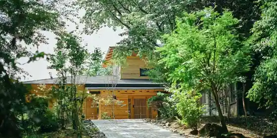
Suigo Sono
レトロな食堂を営む 奈良旅館
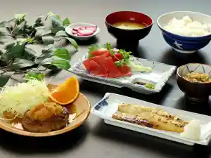
Retoro Na Shokudo Wo Itonamu Nara Ryokan
Dining
うなぎ村
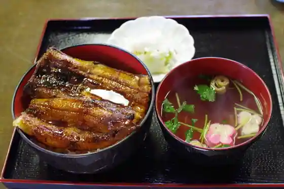
Unagi Mura
蔵出し焼き芋かいつか かすみがうら本店
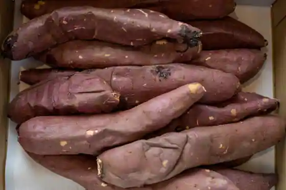
Kura Dashi Yaki Imo Kaitsuka Kasumigaura Hon
がんこや
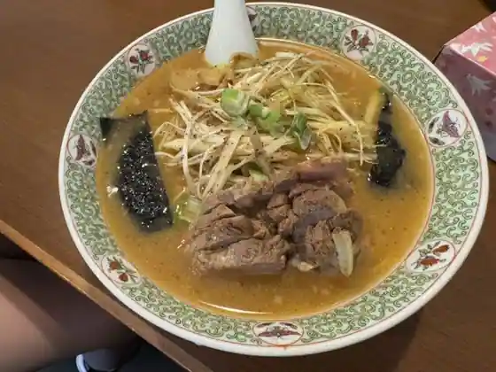
Gankoya
ボンジュール
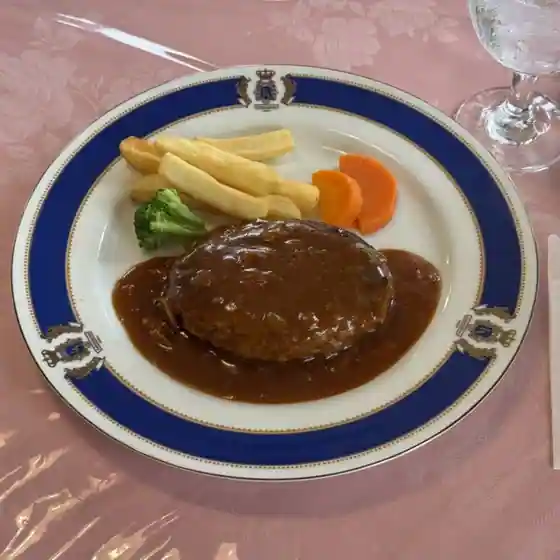
Bonjuru
ムラタ
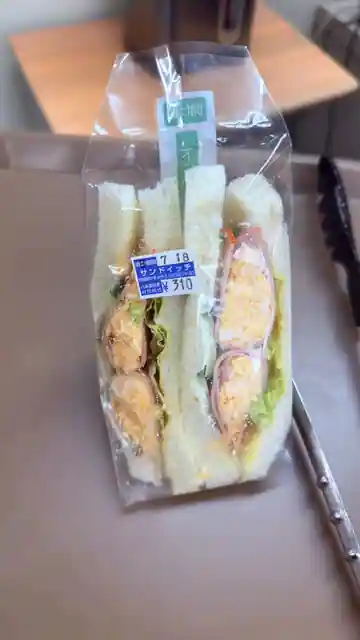
Murata
だい食堂
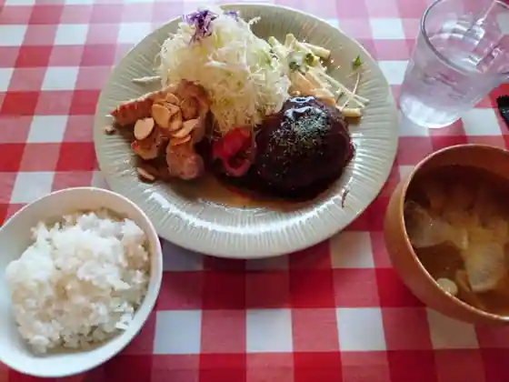
Dai Shokudo
千代田カントリークラブ
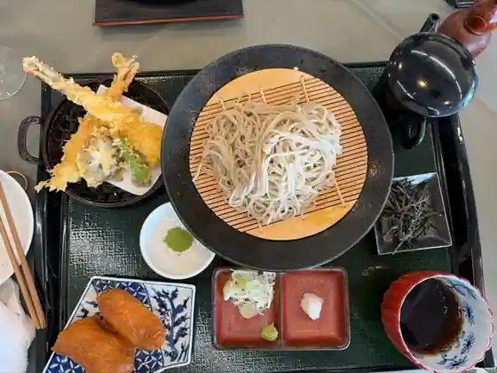
Chiyoda Kantorikurabu
四万騎農園
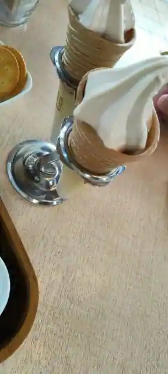
Shima Ki Noen
まるしん 麺匠 きくのや
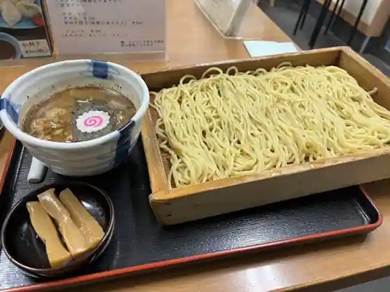
Marushin Men Takumi Kikunoya
セゴビアゴルフクラブ イン チヨダ
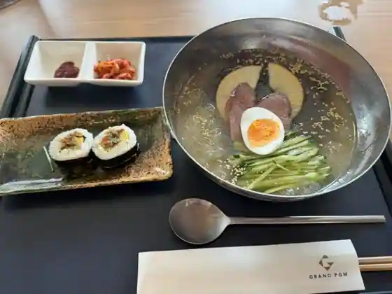
Segobiagorufukurabu Inn Chiyoda
らーめん こうや
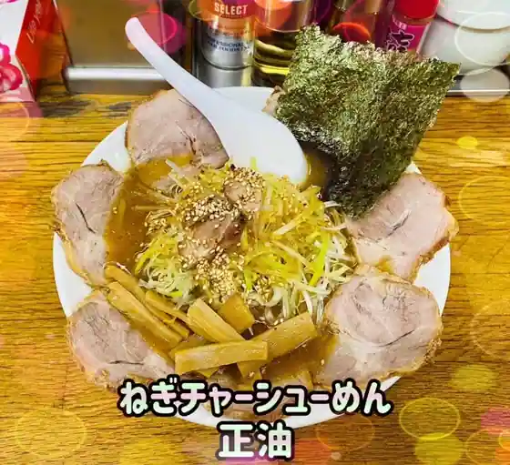
Ramen Koya
御食事処 梅澤
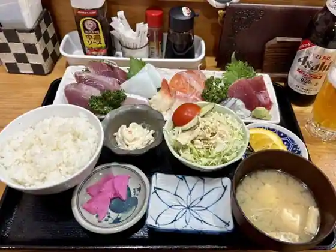
Mike Koto Tokoro Umesawa
かすみがうら常勝軒
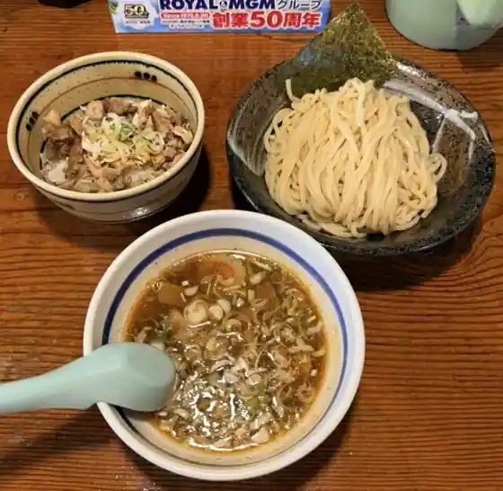
Kasumigaura Josho Ken
濃厚タンメン マルテン
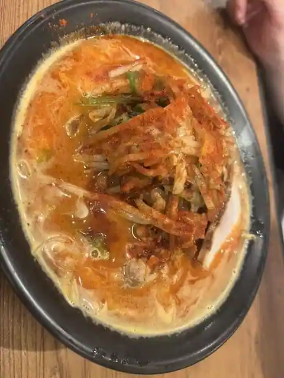
Noko Tanmen Maruten
弥平
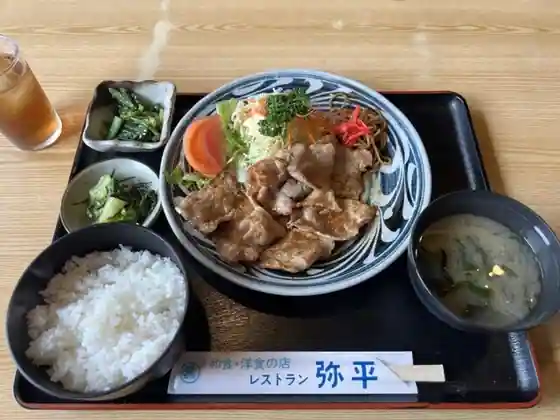
Yahei
サンパタータ
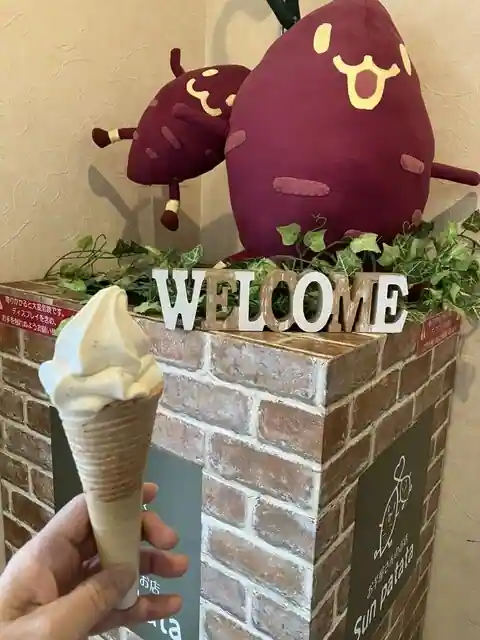
Sanpatata
かすみがうらゴルフクラブ レストラン
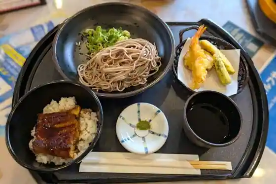
Kasumigaura Gorufukurabu Restaurant
かすみキッチン
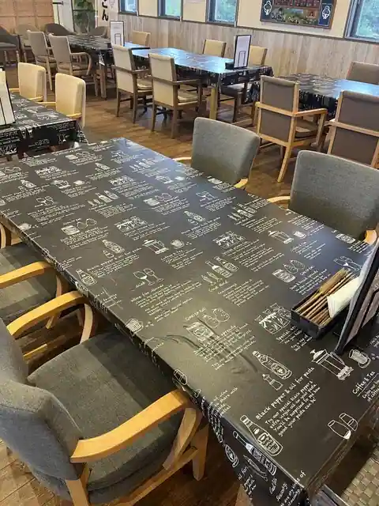
Kasumi Kitchen
千代田しらかばラーメン
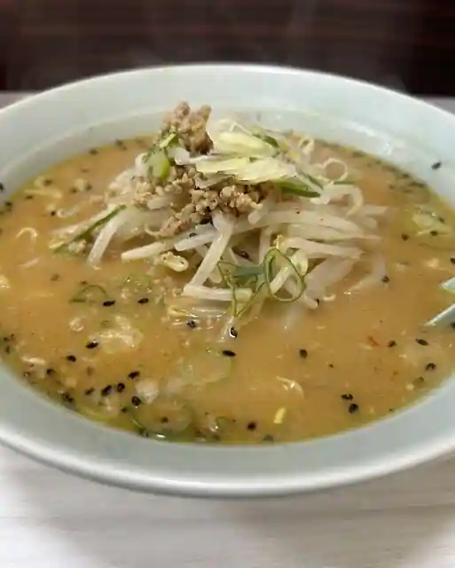
Chiyoda Shirakaba Ramen
蔵人
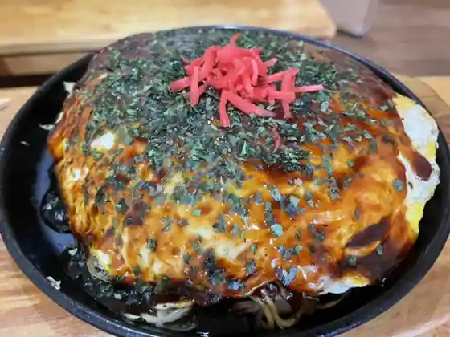
Kurabito
春日野食堂
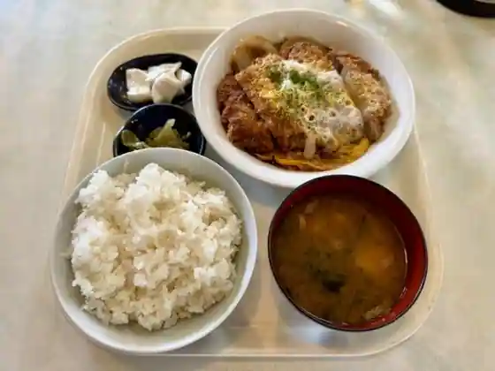
Kasugano Shokudo
出島ゴルフクラブ
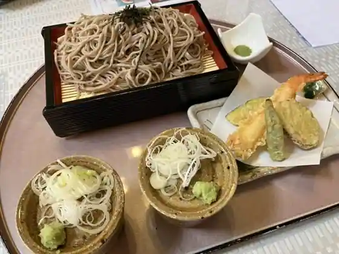
Dejima Gorufukurabu
うお作
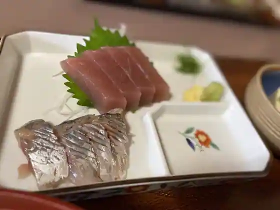
Uo Saku
かすみマルシェ
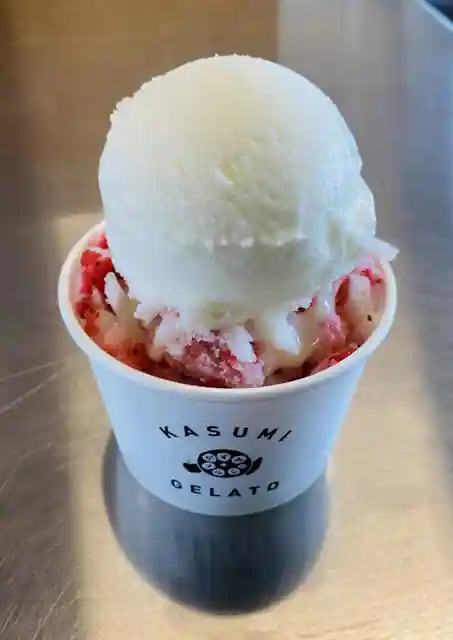
Kasumi Marushie
Sights
Kasumigaura Aquarium
Fukuda Guriin Farm

Ho Saki Park

Kaizuka Chuzaburo Shoten

Yukiiri Fureai no Sato Park

Kasumigaura Koryu Center
to to Sake Seizo (Kabu)
Kasumigaura History Museum
Numata Farm
Kasumigaura Kasseika Center Seisambutsu Chokubai Tokoro
Kanko Ho Eisen (Kasumigaura)
JA Ibaraki Chiyoda Hanano Ka Nosambutsu Chokubai Tokoro
Imai Ichigo Sono
Suzumekko Mori
Nagata Ichigo Sono
San Tsu Ishi Forest Park
Narisawa no Yamazakura
Tasaki Farm
JA Tsuchiura Sanfuresshu Kasumigaura Mise
JA Ibaraki Chiyoda Dai 1 Nosambutsu Chokubai Tokoro
Ikeda Farm
Ko Minka Eguchi Ya
Fugu Anko Kisaku